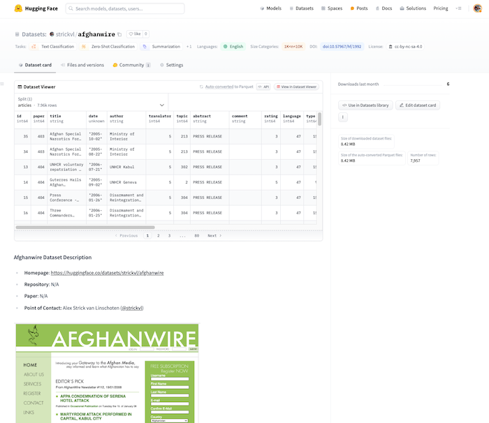

I am excited to announce the release of a new dataset on the Hugging Face Hub: the Afghanwire Dataset. This dataset is a comprehensive collection of translated Afghan media articles from the period of May 2006 to September 2009, created by the Afghanwire media agency, which I co-founded together with Felix Kuehn.

During the years that Afghanwire was active, our team of Afghan translators worked diligently to translate articles from Dari and Pashto media sources into English. The dataset includes translated newspaper and magazine articles, as well as summaries of radio and television content. As most of the original media from this period is no longer available online, and certainly not in English, this dataset represents the largest publicly available trove of translated Afghan media for the 2006-2009 period.
The primary motivation for releasing this dataset is to serve as a historical artefact, preserving the voices and perspectives of Afghan civil society during a critical period in the country’s history. By making these translated articles accessible to researchers, historians, and the general public, we aim to shift the focus from foreign powers and military forces to the diverse opinions and discussions within Afghan society.
Dataset Overview
The Afghanwire Dataset consists of 7,990 translated articles, covering a wide range of topics and sourced from media outlets across Afghanistan. The dataset is provided as a single large collection, with no predefined splits. Each article is accompanied by metadata such as the publication date, author (if available), translator, topic, and language.
One of the strengths of this dataset is its geographical diversity. Although the Afghanwire office was based in Kabul, efforts were made to obtain newspapers and magazines from the provinces to ensure a representative collection. This inclusivity is particularly valuable for regions like Dai Kundi province, whose media coverage might have otherwise been lost and that we sought to represent.
Potential Applications
While the primary purpose of the Afghanwire Dataset is to serve as a historical resource, it also presents opportunities for various Natural Language Processing (NLP) tasks. These include:
- Named Entity Recognition (NER) for entities that may be underrepresented in standard or smaller models.
- Sentiment analysis to gauge public opinion on various issues during the covered period.
- Topic modelling to identify the main themes and concerns in Afghan media discourse.
- Comparative analysis with other datasets or media sources to identify unique perspectives or biases.
Accessing the Dataset
The Afghanwire Dataset is now available on the Hugging Face Hub under a Creative Commons Attribution-ShareAlike 4.0 International (CC BY-SA 4.0) license. Researchers and interested parties can access the dataset here.
Next Steps
I’ve had these files sitting on my hard drive for over a decade now. The website is barely accessible via archive.org snapshots (see here, for example) but since the newsletter and most articles were behind a login screen (though no paywall 🤟) the only source of the data was a database dump we made before we switched off the servers. (As a side note, this was a raw MySQL dump compatible with v4.1.21 which is actually so old that you can’t find Docker images to support it. I was saved by this amazing repo from @andrebossi which gave me everything I needed to rescue the data and port it out into Parquet files.)
I hope that researchers, historians and other interested parties find this a useful collection of the voices of Afghan civil society during a critical period in the country’s history. By making these translated articles accessible to a wider audience, as always I hope to foster a deeper understanding of the complex issues and diverse perspectives that shaped Afghanistan during the 2006-2009 period.
I would like to express my gratitude to the dedicated team of translators at Afghanwire, particularly Hamid Stanikzai, Atif Mohammadzai, Abdul Hassib Rahimi, and Hamid Safi, for their tireless efforts in selecting and translating these articles. Their work has made this dataset possible and ensures that the voices of Afghan civil society will not be forgotten.